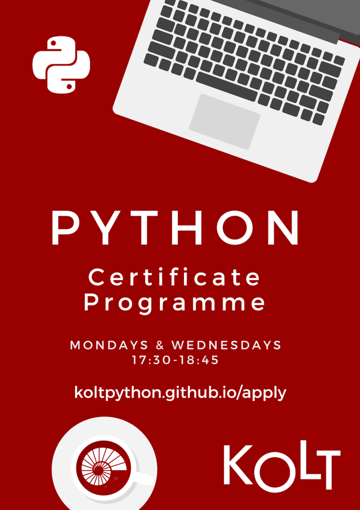

If you want to start programming but don’t know where to start on your own, you are invited to KOLT’s certificate program. Program covers beginner level programming and problem solving principles and their implementation by using Python.
Program is designed for students with no background in programming and the materials are prepared for absolute beginners.

Students from all majors are welcomed!
**Participants will be selected based on a random draw due to limited capacity.**
Duration: 13 weeks
Weekly Lecture Time: Tuesday 14:30-15:45.
Weekly Sections: TBA in the first week.
Location: TBA
All you need to do is apply using this form until 23:59 pm, Monday Jan. 27.
You will be informed about your application status on Monday night and first class will be on Tuesday Jan. 28
14:30-15:45
See you in class!